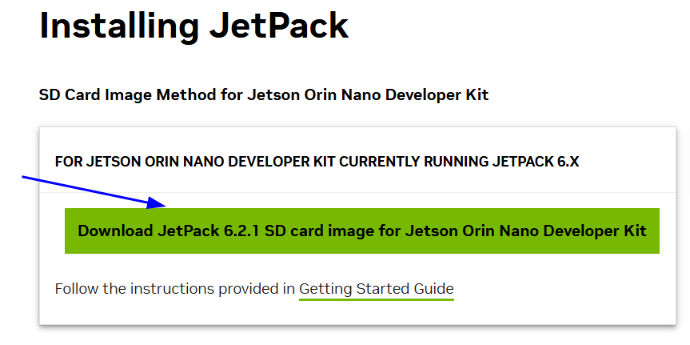
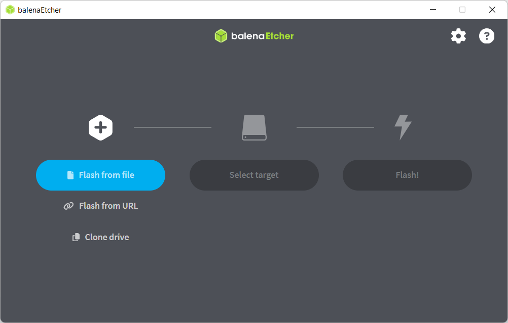
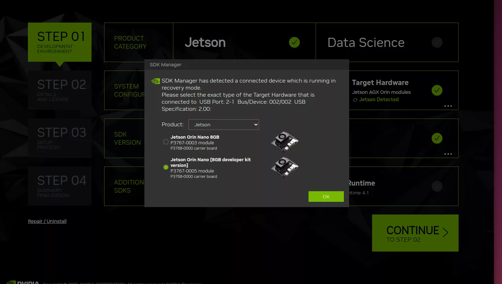
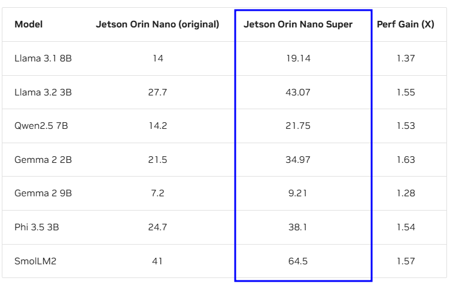
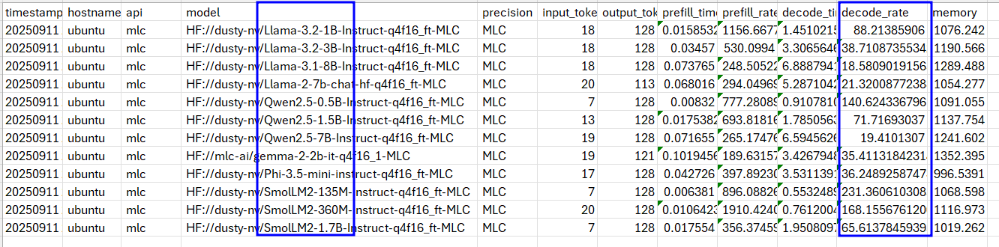

There are three parts in this article: - OS installation (simple) - Benchmark Test (simple) - Pytorch installation (difficult and valuable)
Operating System Installation
For Jetson Orin Nano Super, we need to install JetPack which consists of the Ubuntu OS and AI suite.
We can find it in JetPack Archive. You know, the Jetpack Download Page only show the latest version, so we have to find the correct version for Jetson Orin Nano Super on the archive page.
So far, I can find the lastest version for Orin Nano Super is JetPack 6.21.
We have two ways to install the OS: SD Card and SDK Manager.
SD Card: You only need to download the OS image, and write it into an SD card (>= 64G).
SDK Manager: In this way, you need to have an Linux computer, whose OS is Ubuntu 22.04/24.04. You also need a jumper cap or a jumper wire to make Orin Nano Super to a bootloader mode. The advantage is you can flush the OS to the SD card, SSD or USB devices. It's powerfull.
If you have a cumputer with Ubuntu 22.04/24.04. I recommend this way, it is more simple and powerfull.
SD Card
Step1: Download SD card image
Download the image from JetPack 6.2.1 SD card image or

*Attention: the SD card stroage size must be bigger or equal than 64GB.I tested 32GB SD card, then reboot failed
Step2: Download balenaEtcher and install it
Download balenaEtcher from balenaEtcher

Then choose the downloaded image file and the target SD card, click Flash. You will get the SD card with Ubuntu 22.04 in several minutes.
SDK Manager
Step1: Boot Orin Nano Super into the flash mode
Use the jumper cap or jumper wire to short the FC REC pin and GND pin.
Use USB type-c cable to connect it to your Ubuntu computer (Frankly speaking, I didn't test if a Ubuntu VM running on Windows can work.).
Step2: Just follow the instruction to flush it
If you want more details, you can find the dtails in Upgrade Jetson Orin Nano Super Using NVIDIA SDK Manager
Only one thing you need to attention is if your Orin Nano Super is the official developer kit. Please choose Jetson Orin Nano[8GB developer kit version]. The other settings is not important.

Use jetson-stats to mointor your machine
We can use tool jetson-stats to watch hardware's status like GPU, CPU, memory usage, temperature, fan speed and so on. (There is no nvidia-smi command on Jetson Orin Nano Super)
sudo apt install python3-pip
sudo -H pip3 install -U jetson-stats
jtop
Bechmark Test
If you want to test if your Orin Nanp Super is a real one or a fake one. This way is the most accurate way.
We will use the script on Benchmarks of Jetson Orin Nano Super, and compare the test result to the benchmark on the same page.

Setp1. Install related packages
sudo apt install -y nvidia-jetpack, nvidia-container-toolkit, docker-ce
sudo nvidia-ctk runtime configure --runtime=docker
sudo usermod -aG docker $USER
newgrp docker
sudo systemctl restart docker
Step2. Install jetson-containers
git clone https://github.com/dusty-nv/jetson-containers
bash jetson-containers/install.sh
echo 'export PATH="$HOME/.local/bin:$PATH"' >> ~/.bashrc
source ~/.bashrc
# If you are using "oh mh zsh" then
echo 'export PATH="$HOME/.local/bin:$PATH"' >> ~/.zshrc
source ~/.zshrc
Step3. Set the huggingface token
wget https://raw.githubusercontent.com/dusty-nv/jetson-containers/refs/heads/master/packages/llm/mlc/benchmark.sh
Create a token on huggingface with READ privillege. Then modify SET_YOUR_HUGGINGFACE_TOKEN in benchmark.sh to your token.
Step4. Go and test
# let orin nano super in super power model
sudo nvpmodel -m 2
sudo jetson_clocks
chmod +x benchmark.sh
./benchmark.sh
After the test is done. You can find "mlc.csv" in "jetson-containers/data/benchmarks".

The decode_rate is the final result. Just compare it to the official result.
My thinking
The official jetson AI team use LLM inference as the benchmark. If we want to run small LLM or SLM on this device. We can follow their way.
We can use some LLM models specialized for Jetson Devices from the official website.
If we want to use our own LLM model. We can use MLC to do our own translation and optimization. (MLC use the Apache TVM Utility)
PyTorch Installation
We can follow the offical way. You don't need to follow the instructions in chapter "Building Torch-TensorRT in JetPack".
However, we have several things to pay attention:
1. Modify the installation command line
In chapter "Installation Torch-TensorRT in JetPack"
# change
# python -m pip install torch==2.8.0 torch_tensorrt==2.8.0 torchvision==0.24.0 --extra-index-url https://pypi.jetson-ai-lab.io/jp6/cu126
# to
python3 -m pip install "numpy==1.26.1"
python3 -m pip install --index-url https://pypi.jetson-ai-lab.io/jp6/cu126 torch==2.8.0 torchvision==0.23.0 torch_tensorrt==2.8.0 --no-cache-dir
2. Install nvidia-cudss
wget https://developer.download.nvidia.com/compute/cudss/0.6.0/local_installers/cudss-local-tegra-repo-ubuntu2204-0.6.0_0.6.0-1_arm64.deb
sudo dpkg -i cudss-local-tegra-repo-ubuntu2204-0.6.0_0.6.0-1_arm64.deb
sudo cp /var/cudss-local-tegra-repo-ubuntu2204-0.6.0/cudss-*-keyring.gpg /usr/share/keyrings/
sudo apt-get update
sudo apt-get -y install cudss
https://github.com/NVIDIA/Isaac-GR00T/issues/343
Comments
comments powered by Disqus